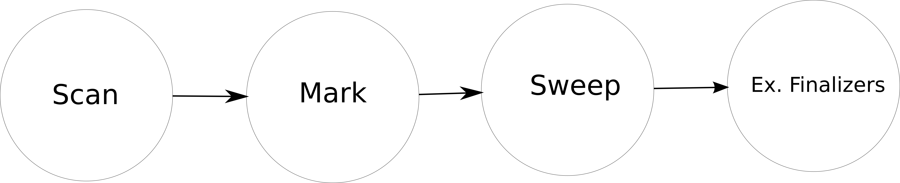

- Introduction
- Motivation
- Known problems
- Definitions
- Garbage collection trade-offs
- CPython implementation - Reference Counting
- Basic objects
- Reference Counting algorithm
- Cycles detector
- PyPy approach
- Description
- Incminmark
Agenda
Introduction
Motivation
Python usage
Known problems
- Dealing manually with memory is hard
- Memory leaks
- Ownership
- Double frees
int * func ( void )
{
int * num = malloc (10 * sizeof ( int ));;
/* ... */
return num ;
}
Known problems
- Dangling Pointers
int * func ( void )
{
int num = 1234;
/* ... */
return #
}
Some solutions
Scenarios where manual memory management is mandatory
- Embedded systems
- Performance constrained applications
- Applications that need determinism
What is garbage collection?
First time

Formal definition
Garbage collection is automatic memory management. While the mutator runs , it
routinely allocates memory from the heap. If more memory than available is
needed, the collector reclaims unused memory and returns it to the heap.
Mutator
The part of a running program which executes application code.
Our running program
Heap
A data structure in which objects may be allocated or deallocated in any order.
Collector
The part of a running program responsible of garbage collection.
Python VM
To know more
Trade-offs
- Additional resources consumption.
- Performance impacts.
- Unpredictability on when the GC is performed (depending on the algorithm).
CPython garbage collector
Reference counting
Object model
typedef struct _object {
_PyObject_HEAD_EXTRA
Py_ssize_t ob_refcnt;
struct _typeobject *ob_type;
} PyObject;
How does it work? (1)
foo = Foo() my_list = []
How does it work? (2)

How does it work? (3)
foo = Foo() my_list = [] my_list.append(foo)
How does it work? (4)
What happens under the hood?
static int
app1(PyListObject *self, PyObject *v)
{
Py_ssize_t n = PyList_GET_SIZE(self);
assert (v != NULL);
.
.
.
if (list_resize(self, n+1) == -1)
return -1;
Py_INCREF(v);
PyList_SET_ITEM(self, n, v);
return 0;
}
What happens under the hood?
#define Py_INCREF(op) ( \
_Py_INC_REFTOTAL _Py_REF_DEBUG_COMMA \
((PyObject*)(op))->ob_refcnt++)
How does it work? (4)
foo = Foo() my_list = [] my_list.append(foo) my_list[0] = None
How does it work? (5)
What happens under the hood?
int
PyList_SetItem(PyObject *op, Py_ssize_t i,
PyObject *newitem)
{
PyObject *olditem;
PyObject **p;
.
.
.
p = ((PyListObject *)op) -> ob_item + i;
olditem = *p;
*p = newitem;
Py_DECREF(olditem);
return 0;
}
What happens under the hood?
#define Py_DECREF(op) \
do { \
PyObject *_py_decref_tmp = (PyObject *)(op); \
if (_Py_DEC_REFTOTAL _Py_REF_DEBUG_COMMA \
--(_py_decref_tmp)->ob_refcnt != 0) \
_Py_CHECK_REFCNT(_py_decref_tmp) \
else \
_Py_Dealloc(_py_decref_tmp); \
} while (0)
How does it work? (6)
foo = Foo() my_list = [] my_list.append(foo) my_list[0] = None del foo
How does it work? (7)
Wait a minute
Cycles
What's the problem?
foo = Foo() my_list = [] my_list.append(foo) foo.list = my_list
What's the problem?
What's the problem?
foo = Foo() my_list = [] my_list.append(foo) foo.list = my_list del foo del my_list
What's the problem?
- One of the trade-offs of RC
What's the problem?
- One of the trade-offs of RC
Algorithm
typedef union _gc_head {
struct {
union _gc_head *gc_next;
union _gc_head *gc_prev;
Py_ssize_t gc_refs;
} gc;
double dummy; /* force worst-case alignment */
} PyGC_Head;
- GC keep track on
PyGC_Head generation0of every new allocated object
Algorithm
Algorithm
class dict(object):
def tp_traverse(self, fn):
for k, v in self.items():
fn(k)
fn(v)
class list(object):
def tp_traverse(self, fn):
for v in self:
fn(v)
Algorithm
Algorithm
Algorithm
Algorithm
Algorithm
Demo Time!
Problems
- Finalizers
__del__ - Weakrefs
Reference counting
- 😁 Is
incremental, as it works, it frees memory - 😱 Detecting Cycles is hard
- 😱 Size overhead on objects
PyPy
PyPy

- Agnostic GC
- Different implementations over time
- Nowadays it uses
incminmark
Young objects
[elem * 2 for elem in elements]
balance = (a / b / c) * 4
'asdadsasd-xxx'.replace('x', 'y').replace('a', 'b')
foo.bar()
Memory model
GC
- Minor and Major collection
- Objects are moved only once
- Major collection is done incrementally (to avoid long stops)
GC

GC - Mark and Sweep

GC - Mark and Sweep
- 😁 Can collect cycles
- 😱 More complex
- 😱 On full recollection stop the world
Questions?
Thank You ˊ~ω~ˋ